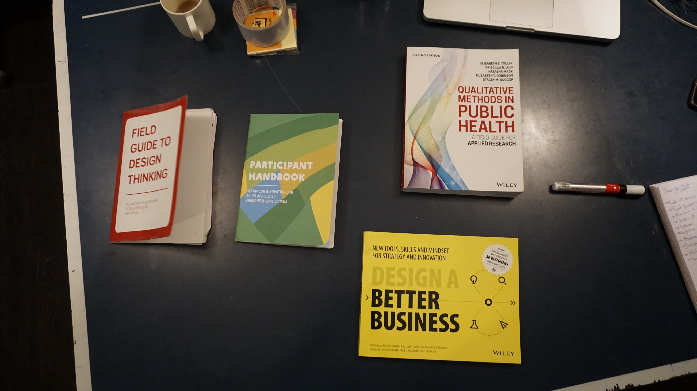

Toolkits and Dissemination

The trickiest, but arguably the funnest bit of the project. Yes, funnest. Initially I had started off this project envisioning a toolkit as the end result. But what exactly is a toolkit? More accurately, a method toolkit is a collection of exercises and activities designed to propogate knowledge and scale impact of the same. Research and experiments conducted in one place are usually packaged into a toolkit in an attempt to replicate impact at scale.
The aim is not to teach a man how to fish. The aim is to teach a man to teach himself how to fish. Toolkits are supposed to let the on-ground team replicate the methods used in the successful pilot. Although guided workshops are hosted to teach the process of using the toolkit, the onus is on the toolkit itself to be accessible enough to disseminate the information. Having read the wonderful essays by Akshay and Quicksand on toolkits, I’ve started to reconsider my approach toward a toolkit.
My mistrust of toolkits started long before the project started. I would never use a toolkit unless I was mandated to, or in a workshop setting. The list of things I detest in toolkits is long, so I’ll focus on the big ones.
The sheer inaccessibility of toolkits is the most frustrating. The language, the way the tools are structured and the tone of the content makes it seem cold, aloof, and almost academic. Then the lack of context is borderline criminal. Sure, it broadly works in a few situations, but there will always be exceptions and special cases.
The merit of any toolkit is judged on how often is it used. If no one feels like using the tools then it has failed, no matter how technically resolved it may be. There is a caveat to add here: toolkits are always aimed at a very particular target audience, people who are in specific position at a specific time, doing a specific activity.
I could be completely wrong about this, and statistics will probably prove so, there being enough numbers to prove the success of toolkits. But for me, personally, they simply don’t work and there are better ways of disseminating information. It’s also important to recognise that the method of dissemination should entirely depend on the target user, and not on the nature of the knowledge itself. Of course, in an ideal world every specific problem would have its own bespoke solution, but since that not going to happen anytime soon, we have to do the best we can with general solutions.
In my poorly informed, highly inexperienced opinion, I feel that toolkits shouldn’t teach a fisherman how to fish, because unless you cover every single type of fishing technique, it’s not going to be a very helpful guide to those who aren’t in the same situation as described in the toolkit. What they should do is, to teach the principles and concepts of fishing. So that you can learn and develop your own unique fishing technique. So, teach a fisherman to teach himself how to fish. Everyone is creative in their own way, and will figure out solutions to their own particular problems when taught the basic principles and concepts.
It’s a lot like mathematics. Once you learn the basic formulas, and learn how to derive them, you can then apply it to any problem. Another lesson I learnt from mathematics is that you have to understand the problem very well. Once you understand what the situation needs and requires, you can then use the necessary formula. Of course, real life is nothing like mathematics, there exist many complexities that no toolkit can handle.
I really like reading case studies. HBR is a magazine that is full of them and I devour it the moment I can get my hands on a copy. On the face of it, case studies are just another layer of abstraction between the reader and the information. But that layer of abstraction gives the information context and tells the reader how it was relevant only in that context. So one can separate the context from the story with the additional understanding of knowing how it was used in context, hence giving a better understanding of the information. So I tend to understand concepts a whole lot better when presented to me in case studies. The power of narratives to explain a concept should never be underestimated.
The other alternative is that we look at the other end of the spectrum by making a checklist of sorts, which the user can use as reference to get through the process. This would leave the entire process in the creative control of the said user, and would merely direct them in a particular order of things to do. This is suitable for a limited number of tasks/processes and would compromise on the quality of the process.
At the other extreme, is to individually train people for the task that they’re trying to tackle and give them the knowledge and the ability to execute that know-how. This, of course is highly resource intensive but will guarantee results. Also, highly inefficient when trying to disseminate knowledge to scale up impact. The ideal solution lies somewhere at the multi-cross-section of these methods, and will change according to the broader context.
I’m still trying to figure out the differences between lived experiences and reading about lived experiences. There is a light years of a difference in the impact it has on a person, that goes without saying. But in the context of learning from the said experiences, does it really make that much of a difference? Is learning from reading about mistakes just as effective as actually making those mistakes? Can I learn that its not healthy to touch boiling water from reading about it, just as much as I can by actually touching boiling water once and facing the consequences? As a rational, thoughtful individual, I’d like to think so. There are many strong arguments in favour of actually making the mistakes to learn from them once and for all. But perhaps, in a situation to educate about the dangers of a certain activity, just reading about a certain incident should be impactful enough.